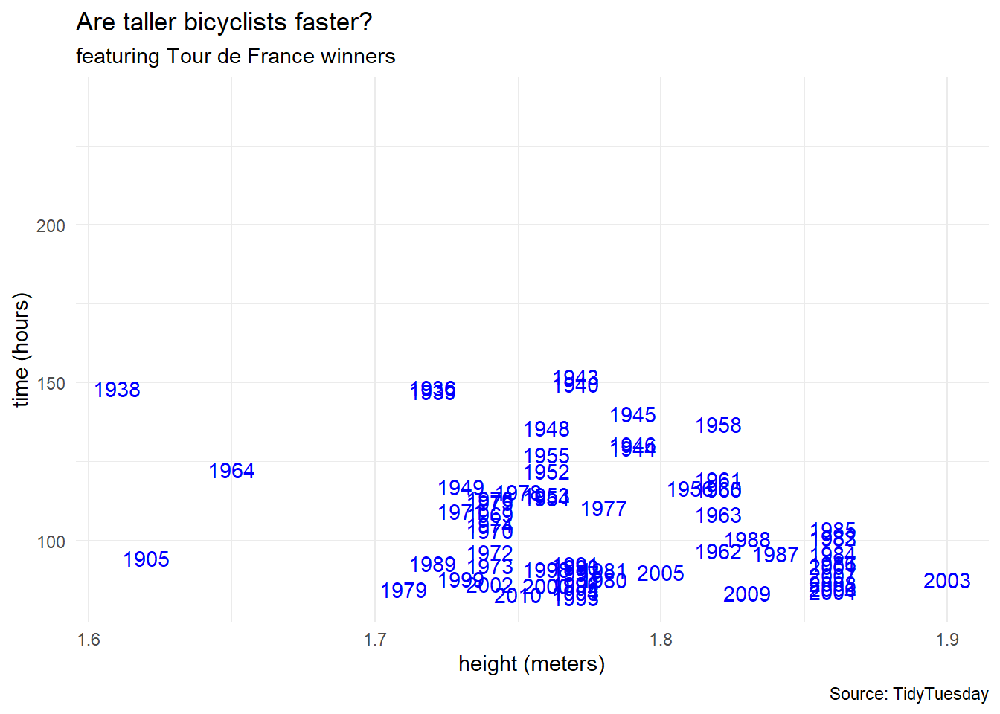
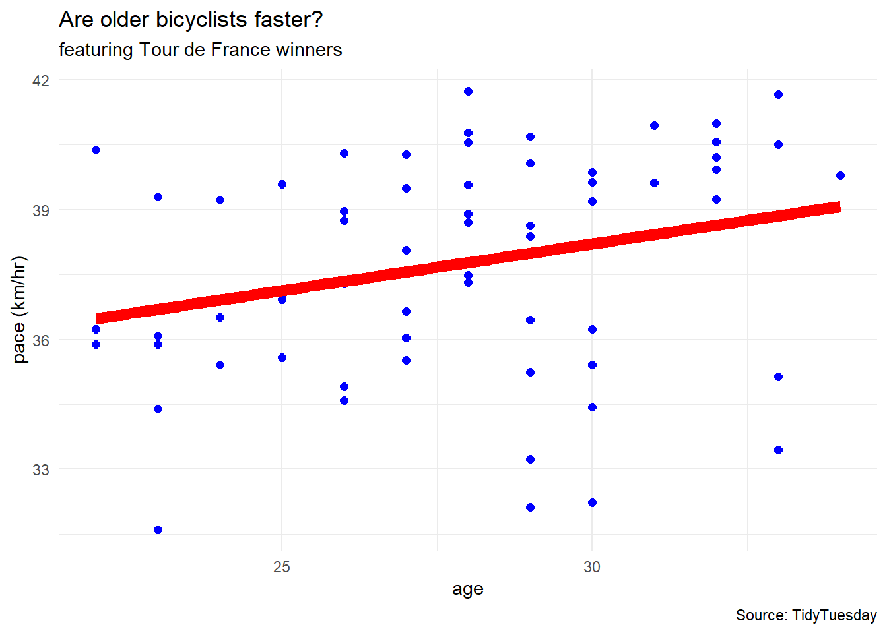
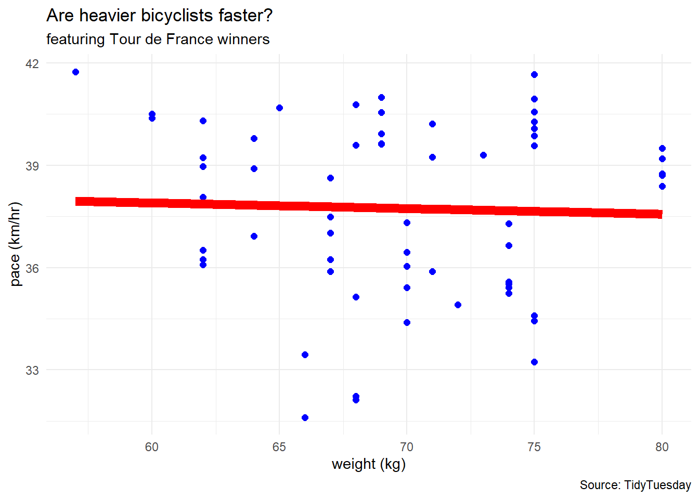
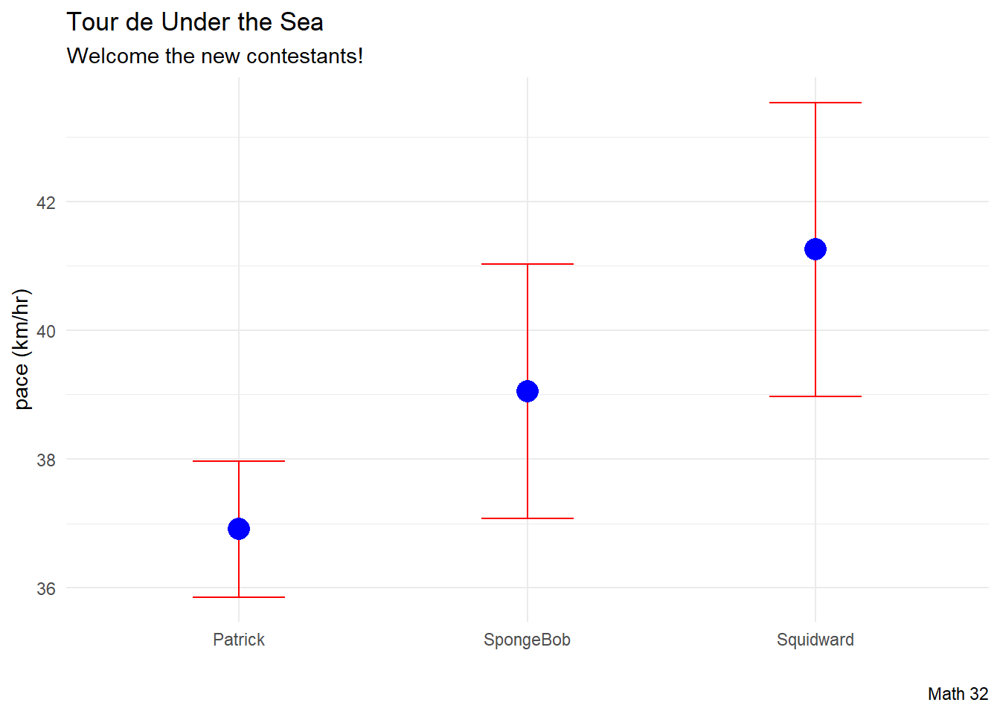
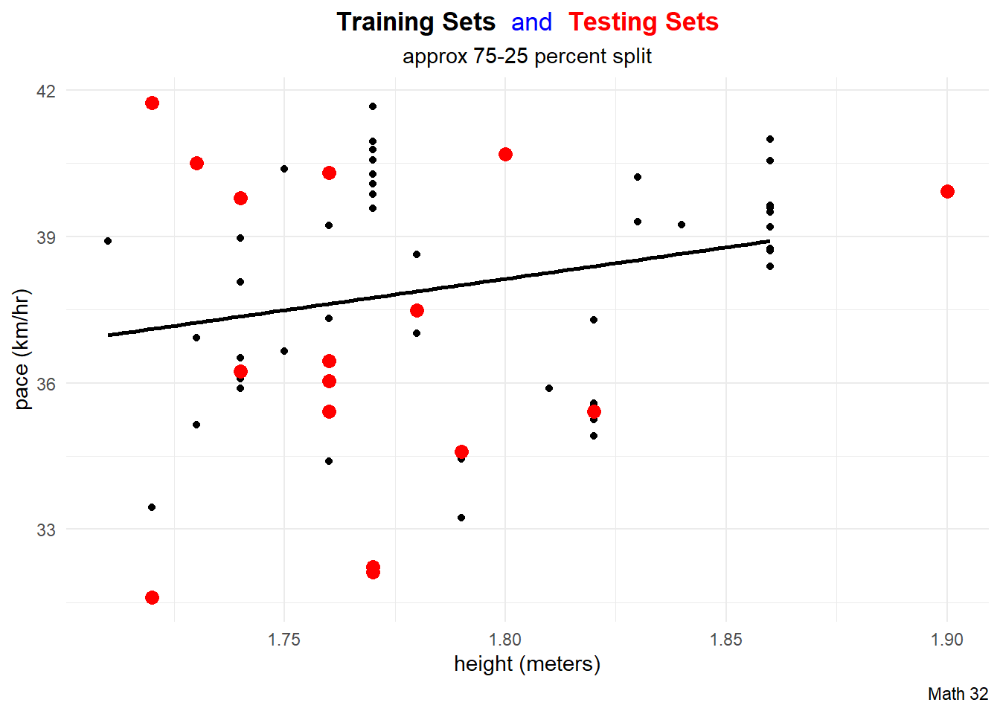
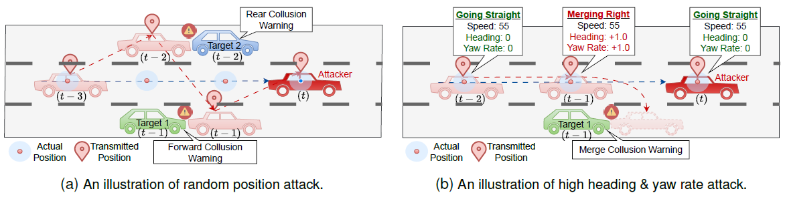

library("ggtext")
library("tidymodels")
library("tidyverse")
# school colors
princeton_orange <- "#E77500"
princeton_black <- "#121212"
# data set: Tour de France
tdf_winners <- readr::read_csv('https://raw.githubusercontent.com/rfordatascience/tidytuesday/master/data/2020/2020-04-07/tdf_winners.csv')SML 201
Start
Libraries and Helper Functions
- Goal: Introduce machine learning (ideas and terminology)
Objectives:
introduce
tidymodelspackagepractice with a
TidyTuesdaydata set
Exploratory Data Analyses
str(tdf_winners, give.attr = FALSE)spc_tbl_ [106 × 19] (S3: spec_tbl_df/tbl_df/tbl/data.frame)
$ edition : num [1:106] 1 2 3 4 5 6 7 8 9 10 ...
$ start_date : Date[1:106], format: "1903-07-01" "1904-07-02" ...
$ winner_name : chr [1:106] "Maurice Garin" "Henri Cornet" "Louis Trousselier" "René Pottier" ...
$ winner_team : chr [1:106] "La Française" "Conte" "Peugeot–Wolber" "Peugeot–Wolber" ...
$ distance : num [1:106] 2428 2428 2994 4637 4488 ...
$ time_overall : num [1:106] 94.6 96.1 NA NA NA ...
$ time_margin : num [1:106] 2.99 2.27 NA NA NA ...
$ stage_wins : num [1:106] 3 1 5 5 2 5 6 4 2 3 ...
$ stages_led : num [1:106] 6 3 10 12 5 13 13 3 13 13 ...
$ height : num [1:106] 1.62 NA NA NA NA NA 1.78 NA NA NA ...
$ weight : num [1:106] 60 NA NA NA NA NA 88 NA NA NA ...
$ age : num [1:106] 32 19 24 27 24 25 22 22 26 23 ...
$ born : Date[1:106], format: "1871-03-03" "1884-08-04" ...
$ died : Date[1:106], format: "1957-02-19" "1941-03-18" ...
$ full_name : chr [1:106] NA NA NA NA ...
$ nickname : chr [1:106] "The Little Chimney-sweep" "Le rigolo (The joker)" "Levaloy / Trou-trou" NA ...
$ birth_town : chr [1:106] "Arvier" "Desvres" "Paris" "Moret-sur-Loing" ...
$ birth_country: chr [1:106] "Italy" "France" "France" "France" ...
$ nationality : chr [1:106] " France" " France" " France" " France" ...colnames(tdf_winners) [1] "edition" "start_date" "winner_name" "winner_team"
[5] "distance" "time_overall" "time_margin" "stage_wins"
[9] "stages_led" "height" "weight" "age"
[13] "born" "died" "full_name" "nickname"
[17] "birth_town" "birth_country" "nationality" Warning: Removed 41 rows containing missing values or values outside the scale range
(`geom_text()`).
tdf_winners |>
mutate(year = edition + 1904) |>
ggplot() +
# geom_point(aes(x = height, y = time_overall),
# color = "blue") +
geom_text(aes(x = height, y = time_overall,
label = year), color = "blue") +
labs(title = "Are taller bicyclists faster?",
subtitle = "featuring Tour de France winners",
caption = "Source: TidyTuesday",
x = "height (meters)",
y = "time (hours)") +
theme_minimal()Cleaning Data
Sometimes we like to perform some preprocessing of the data. In this example, we will
- focus on the champions that were more athletic than in the early years.
- focus on biker
pace(response variable) as the route changes from year to year
bike_df <- tdf_winners |>
select(distance, time_overall,
height, weight, age) |>
drop_na() |>
filter(height >= 1.7) |>
mutate(pace = distance / time_overall) |>
select(pace, height, weight, age)dim(bike_df)[1] 62 4head(bike_df)# A tibble: 6 × 4
pace height weight age
<dbl> <dbl> <dbl> <dbl>
1 31.6 1.72 66 23
2 33.4 1.72 66 33
3 32.1 1.77 68 29
4 32.2 1.77 68 30
5 34.6 1.79 75 26
6 33.2 1.79 75 29Multiple Predictor Variables



bike_df |>
ggplot(aes(x = height, y = pace)) +
geom_point(color = "blue", size = 2) +
geom_smooth(method = "lm", linewidth = 3,
se = FALSE, color = "red") +
labs(title = "Are taller bicyclists faster?",
subtitle = "featuring Tour de France winners",
caption = "Source: TidyTuesday",
x = "height (meters)",
y = "pace (km/hr)") +
theme_minimal()
bike_df |>
ggplot(aes(x = age, y = pace)) +
geom_point(color = "blue", size = 2) +
geom_smooth(method = "lm", linewidth = 3,
se = FALSE, color = "red") +
labs(title = "Are older bicyclists faster?",
subtitle = "featuring Tour de France winners",
caption = "Source: TidyTuesday",
x = "age",
y = "pace (km/hr)") +
theme_minimal()
bike_df |>
ggplot(aes(x = weight, y = pace)) +
geom_point(color = "blue", size = 2) +
geom_smooth(method = "lm", linewidth = 3,
se = FALSE, color = "red") +
labs(title = "Are heavier bicyclists faster?",
subtitle = "featuring Tour de France winners",
caption = "Source: TidyTuesday",
x = "weight (kg)",
y = "pace (km/hr)") +
theme_minimal()Regression via TidyModels
“With tidymodels, we start by specifying the functional form of the model that we want using the parsnip package.”
linear_reg()Linear Regression Model Specification (regression)
Computational engine: lm “However, now that the type of model has been specified, a method for fitting or training the model can be stated using the engine. The engine value is often a mash-up of the software that can be used to fit or train the model as well as the estimation method.”
linear_reg() |>
set_engine("lm") #linear modelLinear Regression Model Specification (regression)
Computational engine: lm lm_fit <- linear_reg() |>
set_engine("lm") |>
fit(pace ~ height + weight + age, data = bike_df)
lm_fitparsnip model object
Call:
stats::lm(formula = pace ~ height + weight + age, data = data)
Coefficients:
(Intercept) height weight age
3.8455 21.0987 -0.1387 0.2113 tidy(lm_fit)# A tibble: 4 × 5
term estimate std.error statistic p.value
<chr> <dbl> <dbl> <dbl> <dbl>
1 (Intercept) 3.85 12.3 0.313 0.755
2 height 21.1 8.06 2.62 0.0112
3 weight -0.139 0.0685 -2.03 0.0474
4 age 0.211 0.0979 2.16 0.0350Observe where we have p-values < 0.05
Interaction Terms
lm_fit_with_interaction <- linear_reg() |>
set_engine("lm") |>
fit(pace ~ height + weight + age + height:weight + height:age + weight:age +
height:weight:age,
data = bike_df)
lm_fit_with_interactionparsnip model object
Call:
stats::lm(formula = pace ~ height + weight + age + height:weight +
height:age + weight:age + height:weight:age, data = data)
Coefficients:
(Intercept) height weight age
924.8499 -444.1560 -15.6339 -27.8628
height:weight height:age weight:age height:weight:age
7.9297 13.9352 0.4802 -0.2425 tidy(lm_fit_with_interaction)# A tibble: 8 × 5
term estimate std.error statistic p.value
<chr> <dbl> <dbl> <dbl> <dbl>
1 (Intercept) 925. 2272. 0.407 0.686
2 height -444. 1287. -0.345 0.731
3 weight -15.6 32.8 -0.477 0.635
4 age -27.9 80.3 -0.347 0.730
5 height:weight 7.93 18.5 0.428 0.670
6 height:age 13.9 45.5 0.306 0.761
7 weight:age 0.480 1.16 0.414 0.680
8 height:weight:age -0.243 0.656 -0.370 0.713
Overfitting
Did you notice that even though we added more terms to the model, we did not reach significance in any of the variables? This may be foreshadowing of overfitting.
Prediction
- SpongeBob is a 26-year-old, 1.77 m tall bicyclist who weighs 55 kg
- Patrick is a 25-year-old, 1.81 m tall bicyclist who weighs 75 kg
- Squidward is a 31-year-old, 1.89 m tall bicyclist who weighs 65 kg
new_contestants <- data.frame(name = c("SpongeBob", "Patrick", "Squidward"),
age = c(26, 25, 31),
height = c(1.77, 1.81, 1.89),
weight = c(55, 75, 65))
mean_predictions <- predict(lm_fit, new_data = new_contestants)
mean_predictions# A tibble: 3 × 1
.pred
<dbl>
1 39.1
2 36.9
3 41.3CI_predictions <- predict(lm_fit,
new_data = new_contestants,
type = "conf_int")
CI_predictions# A tibble: 3 × 2
.pred_lower .pred_upper
<dbl> <dbl>
1 37.1 41.0
2 35.9 38.0
3 39.0 43.5df_for_plot <- new_contestants |>
bind_cols(mean_predictions) |>
bind_cols(CI_predictions)
df_for_plot name age height weight .pred .pred_lower .pred_upper
1 SpongeBob 26 1.77 55 39.05386 37.07966 41.02807
2 Patrick 25 1.81 75 36.91179 35.85758 37.96601
3 Squidward 31 1.89 65 41.25491 38.97189 43.53794df_for_plot |>
ggplot(aes(x = name)) +
geom_errorbar(aes(ymin = .pred_lower,
ymax = .pred_upper),
color = "red",
width = 0.32) +
geom_point(aes(y = .pred), color = "blue", size = 5) +
labs(title = "Tour de Under the Sea",
subtitle = "Welcome the new contestants!",
caption = "Math 32",
x = "",
y = "pace (km/hr)") +
theme_minimal()
Data Splitting
Data Split
How do we generalize? What if we want to predict for more riders or into the future? One strategy is to go back into the provided data and split the data:
- training set: about 75 percent of the data is allocated toward building the model
- Then, the model is applied to the remaining data—the testing set—to see if the generalization is working well.
Split
data_split <- initial_split(bike_df)
train_df <- training(data_split)
test_df <- testing(data_split)print(paste("The number of observations in the training set is:",
nrow(train_df)))[1] "The number of observations in the training set is: 46"print(paste("The number of observations in the testing set is:",
nrow(test_df)))[1] "The number of observations in the testing set is: 16"One Split

title_string <- "<span style='color:#000000'><b>Training Sets</b></span> <span style='color:#0000FF'>and</span>
<span style='color:#FF0000'><b>Testing Sets</b></span>"
train_df |>
ggplot(aes(x = height, y = pace)) +
geom_point(aes(color = "training set"),
# color = "black"
) +
geom_smooth(method = "lm",
aes(x = height, y = pace),
color = "black",
data = train_df,
formula = "y ~ x",
se = FALSE) +
geom_point(aes(x = height, y = pace, color = "testing set"),
# color = "red",
data = test_df,
size = 3) +
labs(title = title_string,
subtitle = "approx 75-25 percent split",
caption = "Math 32",
x = "height (meters)",
y = "pace (km/hr)") +
scale_color_manual(name = "Data Split",
breaks = c("training set", "testing set"),
values = c("training set" = "black",
"testing set" = "red")) +
theme_minimal() +
theme(legend.position = "none",
plot.title = element_markdown(hjust = 0.5),
plot.subtitle = element_text(hjust = 0.5))Many Splits

title_string <- "<span style='color:#000000'><b>Training Sets</b></span> <span style='color:#0000FF'>and</span>
<span style='color:#FF0000'><b>Testing Sets</b></span>"
for(i in 1:10){
data_split <- initial_split(df)
train_df <- training(data_split)
test_df <- testing(data_split)
this_plot <- train_df |>
ggplot(aes(x = height, y = pace)) +
geom_point(aes(color = "training set"),
# color = "black"
) +
geom_smooth(method = "lm",
aes(x = height, y = pace),
color = "black",
data = train_df,
formula = "y ~ x",
se = FALSE) +
geom_point(aes(x = height, y = pace, color = "testing set"),
# color = "red",
data = test_df,
size = 3) +
labs(title = title_string,
subtitle = "approx 75-25 percent split",
caption = "Math 32",
x = "height (meters)",
y = "pace (km/hr)") +
scale_color_manual(name = "Data Split",
breaks = c("training set", "testing set"),
values = c("training set" = "black",
"testing set" = "red")) +
theme_minimal() +
theme(legend.position = "none",
plot.title = element_markdown(hjust = 0.5),
plot.subtitle = element_text(hjust = 0.5))
ggsave(paste0("images/plot", i, ".png"),
plot = this_plot,
device = "png")
}Metrics
We then should get a sense of the validity of a model.
MSE
One metric for evaluating a regression model (i.e. numerical predictions for the response variable) is mean square error of the test set.
\[\text{MSE} = \ds\frac{1}{n_{\text{test}}}\sum_{j = 1}^{n_{\text{test}}} (y_{j} - \hat{y}_{j})^{2}\]
data_split <- initial_split(bike_df)
train_df <- training(data_split)
test_df <- testing(data_split)
lm_train <- linear_reg() |>
set_engine("lm") |>
fit(pace ~ height + weight + age, data = train_df)n_test <- nrow(test_df)
true_values <- test_df$pace
predictions <- predict(lm_train, new_data = test_df |> select(-pace))
MSE <- (1/n_test)*sum((true_values - predictions)^2)
print(MSE)[1] 3.342595Cross-Validation
Cross-Validation
To help generalize to a variety of testing sets, we can perform cross-validation by utilizing several training/testing set splits.
We can then compute the cross-validation error by computing the mean of the test metric.
set.seed(20241112)
N <- 10 #number of replicates
MSE_vec <- rep(NA, N)
for(i in 1:N){
data_split <- initial_split(bike_df)
train_df <- training(data_split)
test_df <- testing(data_split)
lm_train <- linear_reg() |>
set_engine("lm") |>
fit(pace ~ height + weight + age, data = train_df)
n_test <- nrow(test_df)
true_values <- test_df$pace
predictions <- predict(lm_train, new_data = test_df |> select(-pace))
MSE_vec[i] <- (1/n_test)*sum((true_values - predictions)^2)
}
# vector of MSE
MSE_vec [1] 5.340079 4.625713 5.210729 6.940068 5.022087 8.129130 7.934785 4.774170
[9] 8.477074 4.633587# cross-validation error
cv_error <- mean(MSE_vec)
cv_error[1] 6.108742Second Model
set.seed(201)
N <- 25 #number of replicates
MSE_vec <- rep(NA, N)
for(i in 1:N){
data_split <- initial_split(bike_df)
train_df <- training(data_split)
test_df <- testing(data_split)
lm_train <- linear_reg() |>
set_engine("lm") |>
# fit(pace ~ height + weight + age, data = train_df)
fit(pace ~ height + weight + age + height:weight + height:age + weight:age +
height:weight:age,
data = train_df)
n_test <- nrow(test_df)
true_values <- test_df$pace
predictions <- predict(lm_train, new_data = test_df |> select(-pace))
MSE_vec[i] <- (1/n_test)*sum((true_values - predictions)^2)
}
# vector of MSE
MSE_vec [1] 3.381904 6.009615 2.841596 9.032613 5.648347 5.244057 14.174292
[8] 7.890369 6.835132 7.788564 13.704889 5.324071 6.282300 2.811976
[15] 5.136457 5.586255 5.446546 4.333529 12.666760 7.113682 8.068847
[22] 6.562516 10.239050 6.873517 6.590273# cross-validation error
cv_error <- mean(MSE_vec)
cv_error[1] 7.023486Project 3
MisbehaviorX
VehiGAN AI algorithm to instantaneouly detect malicious signal attacks
- Md Hasan Shahriar, Mohammad Raashid Ansari, Jean-Philippe Monteuuis, Cong Chen, Jonathan Petit, Y. Thomas Hou, Wenjing Lou
- presented their work at the ICDCS 2024 conference in Jersey City in the summer of 2024
realms: machine learning, artificial intelligence, cybersecurity

provided 0.1% stratified sample of the MisbehaviorX data set
- very new data set (originally 8 GB)
conduct over 100 hypothesis tests!
Quo Vadimus?
- Precept 9
- Research Consent
- Project 3 (Due Nov 20)
- Exam 2 (December 5)
Footnotes
(optional) Additional Resources
Session Info
sessionInfo()R version 4.4.1 (2024-06-14 ucrt)
Platform: x86_64-w64-mingw32/x64
Running under: Windows 11 x64 (build 22631)
Matrix products: default
locale:
[1] LC_COLLATE=English_United States.utf8
[2] LC_CTYPE=English_United States.utf8
[3] LC_MONETARY=English_United States.utf8
[4] LC_NUMERIC=C
[5] LC_TIME=English_United States.utf8
time zone: America/New_York
tzcode source: internal
attached base packages:
[1] stats graphics grDevices utils datasets methods base
other attached packages:
[1] lubridate_1.9.3 forcats_1.0.0 stringr_1.5.1 readr_2.1.5
[5] tidyverse_2.0.0 yardstick_1.3.1 workflowsets_1.1.0 workflows_1.1.4
[9] tune_1.2.1 tidyr_1.3.1 tibble_3.2.1 rsample_1.2.1
[13] recipes_1.1.0 purrr_1.0.2 parsnip_1.2.1 modeldata_1.4.0
[17] infer_1.0.7 ggplot2_3.5.1 dplyr_1.1.4 dials_1.3.0
[21] scales_1.3.0 broom_1.0.6 tidymodels_1.2.0 ggtext_0.1.2
loaded via a namespace (and not attached):
[1] rlang_1.1.4 magrittr_2.0.3 furrr_0.3.1
[4] compiler_4.4.1 mgcv_1.9-1 vctrs_0.6.5
[7] lhs_1.2.0 pkgconfig_2.0.3 crayon_1.5.3
[10] fastmap_1.2.0 backports_1.5.0 labeling_0.4.3
[13] utf8_1.2.4 rmarkdown_2.28 prodlim_2024.06.25
[16] markdown_1.13 tzdb_0.4.0 bit_4.0.5
[19] xfun_0.46 jsonlite_1.8.8 parallel_4.4.1
[22] R6_2.5.1 stringi_1.8.4 parallelly_1.38.0
[25] rpart_4.1.23 Rcpp_1.0.13 iterators_1.0.14
[28] knitr_1.48 future.apply_1.11.3 Matrix_1.7-0
[31] splines_4.4.1 nnet_7.3-19 timechange_0.3.0
[34] tidyselect_1.2.1 rstudioapi_0.16.0 yaml_2.3.10
[37] timeDate_4041.110 codetools_0.2-20 curl_5.2.1
[40] listenv_0.9.1 lattice_0.22-6 withr_3.0.1
[43] evaluate_0.24.0 future_1.34.0 survival_3.6-4
[46] xml2_1.3.6 pillar_1.9.0 foreach_1.5.2
[49] generics_0.1.3 vroom_1.6.5 hms_1.1.3
[52] munsell_0.5.1 commonmark_1.9.1 globals_0.16.3
[55] class_7.3-22 glue_1.7.0 tools_4.4.1
[58] data.table_1.15.4 gower_1.0.1 grid_4.4.1
[61] ipred_0.9-15 colorspace_2.1-1 nlme_3.1-164
[64] cli_3.6.3 DiceDesign_1.10 fansi_1.0.6
[67] lava_1.8.0 gtable_0.3.5 GPfit_1.0-8
[70] digest_0.6.36 htmlwidgets_1.6.4 farver_2.1.2
[73] htmltools_0.5.8.1 lifecycle_1.0.4 hardhat_1.4.0
[76] gridtext_0.1.5 bit64_4.0.5 MASS_7.3-60.2
Example Callout Block
note, tip, warning, caution, or important